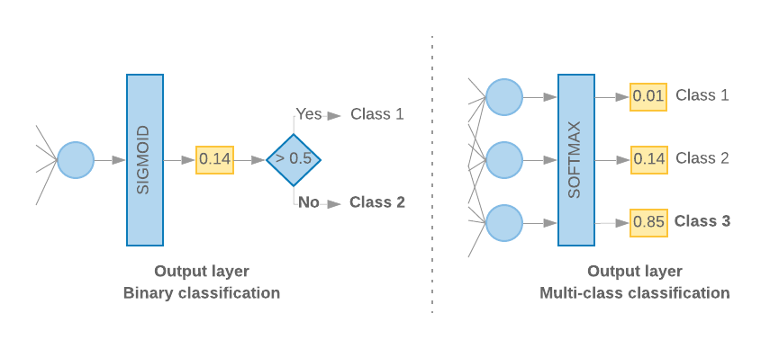

install.packages("keras")
install.packages("tensorflow")
keras::install_keras(method = "conda", envname = "MLBA")Models: Neural Networks
In this tutorial, we will demonstrate how to use keras and tensorflow in R for two common tasks in deep learning (DL): regression for structured data and image classification. We will use two datasets for this purpose: the Boston Housing dataset for regression and the CIFAR-10 dataset for image classification.
Introduction
Keras and TensorFlow are open-source machine learning frameworks for building and training deep learning models. TensorFlow is a low-level framework that provides a foundation for building and training neural networks. keras, on the other hand, is a high-level API built on top of TensorFlow, making it easier to construct and train deep learning models. This means that keras is much more plug-and-play than TensorFlow.
In keras, two main ways to build and run deep learning models are the sequential API and the functional API. The sequential API is a simple way to create a neural network by adding layers in a linear sequence. On the other hand, the functional API provides more flexibility and allows you to create more complex models with shared layers or multiple inputs and outputs. In this lab session, we deal with the more straightforward sequential API; however, feel free to also read about functional API here.
The sequential API is suitable for building simple models quickly and easily. Initially, one has to define the desired network architecture by one layer at a time to a new sequential model. Once the architecture is defined, we need to compile the model and then fit the model to the data to start training. Here is a summary of all the steps:
Define the model architecture: Create a new sequential model object and add layers to it using the pipe operator (
%>%), which translates to theadd()method in Python. We can add as many layers as needed where the type of each layer can also be specified (e.g., dense, convolutional) and any necessary parameters for each layer (e.g., number of nodes, activation function).Compile the model: Once the model’s architecture has been defined, it has to be compiled using the
compile()method. This involves specifying the loss function, optimizer, and any additional metrics you want to track during training.Train the model: To train the model, use the
fit()method and pass in your training data and any necessary hyperparameters (e.g., batch size, number of epochs). A validation set can also be specified to monitor the model’s performance during training. Additionally, there are techniques such as early stopping, which stops the training if the model’s performance on the validation set does not improve after a certain number of epochs.Evaluate the model: After training, the model’s performance on a test set can be evaluated using the
evaluate()method. This will return the loss and any metrics specified during compilation (step 2).Use the model to make predictions: Finally, one can use the trained model to make predictions on new data using the
predict()method either from base R or as an attribute of the model (i.e.,model$predict()). This stage is also known as “inference” in DL.
Setup
We will use the keras and tensorflow libraries in R, which are wrappers around keras and TensorFlow libraries in python. Wrappers provide an abstraction layer that enables users to use a library or framework from a different programming language. Due to this, the syntax of using these libraries in R and python are very close, and maybe except for the %>% operator, there are no major differences. For this reason, all examples are provided in R and we only provide one example of using keras in with the Boston housing data. For the other part of the lab, if you’re more interested in implementing it in python, you can adapt the code yourself based on the provided example.
We first need to get started with the setup. We will install keras into our MLBA environment created during setup.Rmd. This applies whether you’re using only R or both R & python; therefore, if you have not already created a conda virtual environment, please refer to setup.Rmd. Once the the virtual environment already exists, we can then install both keras and tensorflow with keras::install_keras().
We can now check if the installation was successful
reticulate::use_condaenv("MLBA")
library(keras)
library(tensorflow)Once the setup is over, we check if everything works as expected.
tflow <- import("tensorflow")
tflow$constant("Hello Tensorflow!")
# we typically have to do `tf$` to call tensorflow that is automatically loaded like below
# tf$constant("Hello Tensorflow!")If you have the same output, you’re good to go. Also, sometimes when you run tf$constant() command for the first time, you may get Error in py_module_proxy_import(proxy) : Module proxy does not contain module name because you just loaded keras. If it was the case, just rerun this code chunk.
NoteGetting a warning when loading
tensorflow
When loading something from keras/tensorflow, if you get a warning like the one below, you should not worry:
I tensorflow/core/platform/cpu_feature_guard.cc:193] This TensorFlow binary is optimized with oneAPI Deep Neural Network Library (oneDNN) to use the following CPU instructions in performance-critical operations: AVX AVX2
To enable them in other operations, rebuild TensorFlow with the appropriate compiler flags.tensorflow has been optimized to work on graphical processing units (GPUs), and sometimes there are specific configurations for improving the performance of keras on central processing units (CPUs). You can safely ignore these warnings. Training on GPUs, especially when using images or high-dimensional data, drastically speeds up the training process and is one of the reasons behind the popularity of DL. If your computer has an Nvidia GPU (it would not work on AMD or Intel GPUs), you can also set it up to work with tensorflow by following the instructions from here.
Regression for Structured Data
Boston Housing Dataset
The Boston Housing dataset is a well-known dataset used for regression tasks. It contains 506 instances and 13 features, including the median value of owner-occupied homes in $1000s. We will use this dataset to demonstrate how to perform regression on the sales price.
library(keras)
houses <- dataset_boston_housing()
train_x <- houses$train$x
train_y <- houses$train$y
test_x <- houses$test$x
test_y <- houses$test$yData Preparation
We need to normalize the data. This is especially relevant for neural networks to stabilize the computation of the gradients and consequently improve the training process.
means <- apply(train_x, 2, mean)
sds <- apply(train_x, 2, sd)
train_x <- scale(train_x, means, sds)
test_x <- scale(test_x, means, sds)Model Definition
We will use a simple neural network with two hidden layers to perform regression.
TipLearning about some of the hyperparameters
You have many options for different hyperparameters; however, one lab session barely scratches the surface of DL and its hyperparameters. There are a couple of points that we need to specify here:
- You can use any activation function in the middle layers, from a simple linear regression (
linear) to more common ones such ashyperbolic tagnetortanh(often suitable for tabular data) to more sophisticated ones such asrectified linear unitorrelu(better suited to high dimensional data). What is imperative is that in the last dense layer, the number of units and the activation function determine the kind of task (e.g., classification, regression, etc.) you’re trying to accomplish. If you’re doing a regression, the last dense layer has to have 1 unit and alinearactivation function. If you’re doing a binary classification (logistic regression), you still use 1 dense unit but must apply thesigmoidactivation function. If you’re doing multi-class classification, then the number of dense units must equal the number of classes, and the activation function issoftmax(which is a generalization ofsigmoidfor multiple classes). Google also provides a nice visual that explains the difference between the classification models. If you remove the>0.5rule (i.e.,sigmoid), you essentially get a linear regression for that layer.

- It is imperative that, depending on the task, you use the correct type of loss function. For instance, you can use
mean squared error(mse) for regression andcategorical cross-entropyfor multi-class classification.
As mentioned, during the ML course, we cannot cover the details of DL. Suppose you want to understand these hyperparameters better and learn about many new ones. In that case, you can check out the video recordings and the slides for the Deep learning course previously taught at HEC (last given in 2021).
# we set a seed (this sometimes disables GPU performance)
tensorflow::set_random_seed(123)
# define the model structure
model_reg <- keras_model_sequential() %>%
layer_dense(units = 64, activation = "relu", input_shape = c(ncol(train_x))) %>%
layer_dense(units = 64, activation = "relu") %>%
layer_dense(units = 1, activation = "linear")
# compile the model
model_reg %>% compile(
optimizer = "adam",
loss = "mean_squared_error",
metrics = c("mean_absolute_error")
)We can run the same thing in Python with the datasets created in R, e.g. r.train_x.
# import necessary libraries
import tensorflow as tf
from tensorflow import keras
from tensorflow.keras import layers
# Set random seed
tf.random.set_seed(123)
# define the model structure
model_reg = keras.Sequential([
layers.Dense(units=64, activation='relu', input_shape=(r.train_x.shape[1],)),
layers.Dense(units=64, activation='relu'),
layers.Dense(units=1, activation='linear')
])
# compile the model
model_reg.compile(optimizer='adam', loss='mean_squared_error', metrics=['mean_absolute_error'])Model Training
We can then train the model:
history <- model_reg %>% fit(
train_x, train_y,
epochs = 10, #300 to get the best results
batch_size = 32,
validation_split = 0.2,
callbacks = callback_early_stopping(patience = 30,restore_best_weights = T),
verbose = 1 # to control the printing of the output
)You don’t need to assign model %>% fit() to history. We only do that to plot the results later (e.g., with plot(history).
# import necessary libraries
from tensorflow.keras.callbacks import EarlyStopping
# fit the model
model_reg.fit(
r.train_x, r.train_y,
epochs=10, #300
batch_size=32,
validation_split=0.2,
callbacks=[EarlyStopping(patience=30,restore_best_weights=True)],
verbose=1
)Model Evaluation
Finally, we can evaluate the model on the testing set:
nn_results <- model_reg %>% evaluate(test_x, test_y)
nn_results
# alternatively, you can use the `predict` attribute from `model` as shown below
# nn_results <- model$predict(test_x)
# caret::MAE(obs = test_y, pred = as.vector(nn_results))nn_results = model_reg.evaluate(r.test_x, r.test_y)
print(nn_results)To put these results (from R) in context, we can compare it with a simple linear regression:
df_tr <- data.frame(train_y, train_x)
lm_mod <- lm(train_y ~ ., data = df_tr)
lm_preds <- as.vector(predict(lm_mod, newdata=data.frame(test_x))) # `predict()` for lm doesn't accept matrices
# calculate mean absolute error with caret `MAE` installed in the `K-NN excercises`
caret::MAE(obs = test_y, pred = lm_preds)We see that the neural network does significantly better than a regression model. We can also compare it with the trees seen in the CART series.
library(rpart)
set.seed(123)
tree_model <- rpart(train_y ~ ., data=df_tr)
tree_preds <- predict(tree_model,newdata = data.frame(test_x))
# calculate the performance on tree
caret::MAE(obs = test_y, pred = tree_preds)The neural network also outperforms CART (if you run NN for 300 epochs). This is due to multiple reasons, including a higher complexity of the neural network (more parameters), using a validation set, and so on. You will learn about ensemble methods (bagging and boosting) in the upcoming lectures. Ensemble methods are the true champions for structured data and usually outperform neural networks for structured/low-dimensional data.
Image Classification
CIFAR-10 Dataset
The CIFAR-10 dataset is a well-known dataset used for image classification tasks. It contains 50,000 training images and 10,000 testing images of size 32x32 pixels, each belonging to one of ten classes. We will use this dataset to demonstrate how to perform image classification.
In this case, we had our inputs already prepared, but if it was not the case, you can always do:
# Load the CIFAR-10 dataset (it'll take a while for it to download)
cifar10 <- dataset_cifar10()
# Split the data into training and testing sets
train_images <- cifar10$train$x
train_labels <- cifar10$train$y
test_images <- cifar10$test$x
test_labels <- cifar10$test$yIf you do an str(train_images), you can see that the output is a four-dimensional array. In this array, the first element is the number of images in the training set, the second and third elements represent the (pixel values) for each image’s width and height, respectively, and the last element is the color channel of the image. If you had a black-and-white image (called greyscale), the number of channels would be just one. Typically, an image in color is represented with a combination of three colors known as RGB (red, green, and blue). Therefore, here we have three elements associated with the pixel number for each color, and their combination provides us with the colors you see in the image.
Data Preparation
Before building our image classification model, we need to prepare the data by normalizing the values to obtain pixel values between 0-1. Similar to standardization of tabular data, this helps to avoid exploding/vanishing gradients and can improve the convergence of the model.
# Normalize the pixel values
train_images <- train_images / 255
test_images <- test_images / 255We can also plot some of the example images.
# Plot the first 9 images
label_names <- c("airplane", "automobile", "bird", "cat", "deer", "dog", "frog", "horse", "ship", "truck")
par(mfrow = c(3, 3))
for (i in 1:9) {
img <- train_images[i,,,]
# label <- train_labels[i]
label <- label_names[train_labels[i] + 1] # Add 1 to convert from 0-based to 1-based indexing
img <- array_reshape(img, c(32, 32, 3))
plot(as.raster(img))
title(paste("Label:", label))
}We can now one-hot encode our labels to be better adapted to the loss function we will be using (otherwise you can use “sparse” variation of the loss functions).
train_labels <- to_categorical(train_labels)
test_labels <- to_categorical(test_labels)Model definition
We can build our image classification model using keras by defining the layers of the neural network. For this task we’ll be using Convolutional neural networks (CNNs). CNNs are a type of deep learning model that are commonly used for image and video processing. They consist of multiple layers, including convolutional layers, pooling layers, and fully connected layers. The convolutional layers use filters to extract features from the input image, and the pooling layers downsample the output of the convolutional layers. The fully connected layers combine the extracted features to produce the final output of the network. CNNs have been shown to be effective in a wide range of applications, including image classification, object detection, and semantic segmentation.
# Set a seed again for reproducibility
tensorflow::set_random_seed(123)
# Define the model
model_cnn <-
keras_model_sequential()%>%
layer_conv_2d(filters = 32, kernel_size = c(3, 3), input_shape = c(32, 32, 3), activation = "relu") %>%
layer_max_pooling_2d(pool_size = c(2, 2)) %>%
layer_conv_2d(filters = 64, kernel_size = c(5, 5), activation = "relu") %>%
layer_max_pooling_2d(pool_size = c(3, 3)) %>%
layer_conv_2d(filters = 64, kernel_size = c(3, 3), activation = "relu") %>%
layer_flatten() %>%
layer_dense(units = 64, activation = "relu") %>%
layer_dense(units = 10, activation = "softmax")
# Compile the model
model_cnn %>% compile(
loss = "categorical_crossentropy",
optimizer = optimizer_adam(),
metrics = c("accuracy")
)Depending on youer computer, this may take some time to run.
history <- model_cnn %>% fit(
x = train_images,
y = train_labels,
epochs = 10,
batch_size = 64,
# validation_split = 0.2
validation_data= list(test_images, test_labels)
)model_cnn %>% evaluate(
x = test_images,
y = test_labels
)You may notice that we did not obtain extremely high accuracy, but this is okay for multiple reasons:
- We only trained the model for a few epochs and stopped the training very early. You’re welcome to let it run for more epochs.
- We’re dealing with at least ten classes; this is a rather complicated problem.
- In DL, you can define many different architectures and hyperparameters, and since we did not play around with these values, this could also explain the lower performance.
Your turn: NNs applied to the nursing data
Use NNs to fit nursing data, with the cost variable once again set as the prediction outcome. Compare the performance against the tree-based methods. Which type of machine learning model would you go for and why? (think in terms of interpretability and performance)